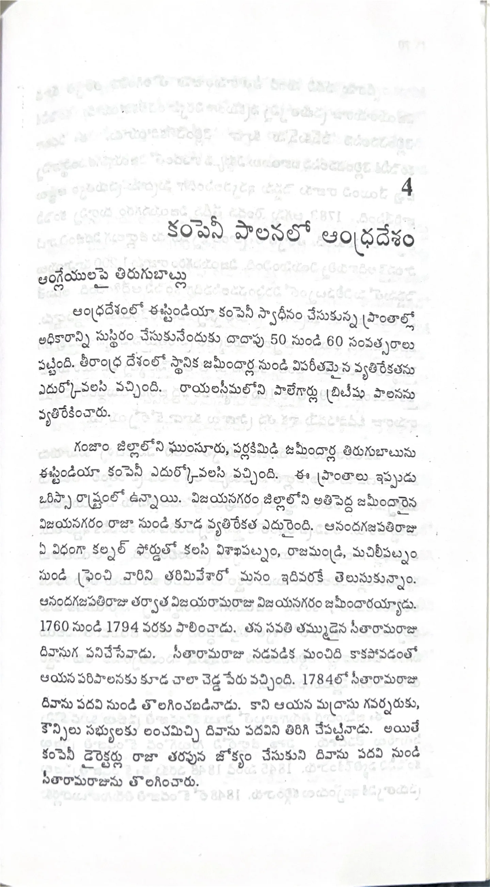

ముద్రిత పుట 69
scanతో మాన్యువల్గా ధృవీకరించిన పాఠ్యం

4 కంపెనీ పాలనలో ఆంధ్రదేశం ఆంగ్లేయులపై తిరుగుబాట్లు ఆంధ్రదేశంలో ఈస్టిండియా కంపెనీ స్వాధీనం చేసుకున్న ప్రాంతాల్లో అధికారాన్ని సుస్థిరం చేసుకునేందుకు దాదాపు 50 నుండి 60 సంవత్సరాలు పట్టింది. తీరాంధ్ర దేశంలో స్థానిక జమీందార్ల నుండి విపరీతమైన వ్యతిరేకతను ఎదుర్కోవలసి వచ్చింది. రాయలసీమలోని పాలేగార్లు బ్రిటీషు పాలనను వ్యతిరేకించారు. గంజాం జిల్లాలోని ఘుంసూరు, పర్లాకిమిడి జమీందార్ల తిరుగుబాటును ఈస్టిండియా కంపెనీ ఎదుర్కొనవలసి వచ్చింది. ఈ ప్రాంతాలు ఇప్పుడు ఒరిస్సా రాష్ట్రంలో ఉన్నాయి. విజయనగరం జిల్లాలోని అతిపెద్ద జమీందారైన విజయనగరం రాజా నుండి కూడ వ్యతిరేకత ఎదురైంది. ఆనందగజపతిరాజు ఏ విధంగా కల్నల్ ఫోర్డుతో కలిసి విశాఖపట్నం, రాజమండ్రి, మచిలీపట్నం నుండి ఫ్రెంచివారిని తరిమివేశారో మనం ఇదివరకే తెలుసుకున్నాం. ఆనందగజపతిరాజు తర్వాత విజయరామరాజు విజయనగరం జమీందారయ్యాడు. 1760 నుండి 1794 వరకు పాలించాడు. తన సవతి తమ్ముడైన సీతారామరాజు దివానుగ పనిచేసేవాడు. సీతారామరాజు నడవడిక మంచిది కాకపోవడంతో ఆయన పరిపాలనకు కూడ చాలా చెడ్డ పేరు వచ్చింది. 1784లో సీతారామరాజు దివాను పదవి నుండి తొలగించబడినాడు. కాని ఆయన మద్రాసు గవర్నరుకు, కౌన్సిలు సభ్యులకు లంచమిచ్చి దివాను పదవిని తిరిగి చేపట్టినాడు. అయితే కంపెనీ డైరెక్టర్లు రాజా తరపున జోక్యం చేసుకుని దివాను పదవి నుండి సీతారామరాజును తొలగించారు.